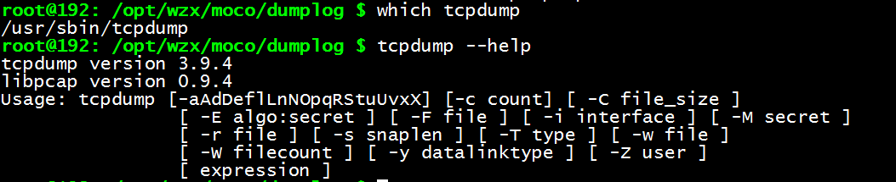
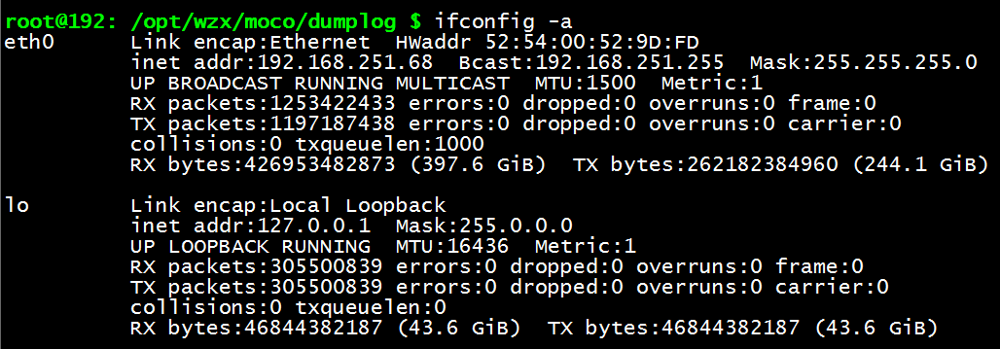
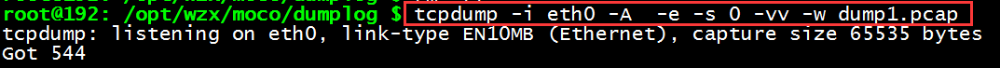
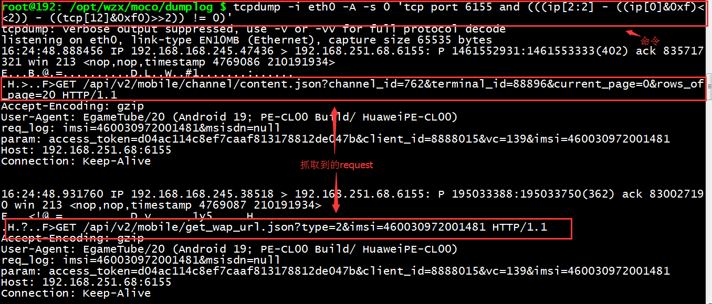

linux服务器抓取http数据包
linux服务器抓包
方法说明
一般利用tcpdump抓取网络数据包并保存，然后用wireshark进行图形查看。
准备工作
- 确认服务器是否已安装tcpdump
1 2 3 4
查看tcpdump的路径 which tcpdump 查看tcpdump命令是否可用 tcpdump --help

备注：目前测试环境服务器上都已安装tcpdump，可以正常使用tcpdump；若未安装tcpdump，先安装tcpdump，安装方法此处不做说明。
执行命令抓包
抓取所有经过网卡的数据包
第一步：确认当前服务器的网卡
1 | ifconig -a |

第二步：执行抓包命令
1 | tcpdump -i eth0 -A -e -s 0 -vv -w dump1.pcap |

监听eth0网卡HTTP某个端口的request和response
1 | tcpdump -i eth0 -A -s 0 'tcp port 6155 and (((ip[2:2] - ((ip[0]&0xf)<<2)) - ((tcp[12]&0xf0)>>2)) != 0)' -w dump2.pcap |

备注：
遇到问题：实时监听服务器看到的数据中文未正常展示
解决方法：
先抓包保存到文件中，然后通过wireshark打开》选择某个http请求右键菜单选择“follow tcp stream ”》编码格式为raw,save as保存文件》用notepad++打开文件
tcpdump的选项介绍
1 2 3 4 5 6 7 8 9 10 11 12 13 14 15 16 17 18 19 20 21 22 23 24 25 26 27 28 29 30 31 32 33 34 35 36 37 38 39 40 41 42 43 44 45 46 | -a 将网络地址和广播地址转变成名字； -b 在数据-链路层上选择协议，包括ip、arp、rarp、ipx都是这一层的。tcpdump -b arp 将只显示网络中的arp即地址转换协议信息； -c 在收到指定数目的包后，tcpdump就会停止； -d 将匹配信息包的代码以人们能够理解的汇编格式给出； -dd 将匹配信息包的代码以c语言程序段的格式给出； -ddd 将匹配信息包的代码以十进制的形式给出； -e 在输出行打印出数据链路层的头部信息； -f 将外部的Internet地址以数字的形式打印出来； -F 从指定的文件中读取表达式,忽略其它的表达式； -i 指定监听的网络接口； -l 使标准输出变为缓冲行形式,如tcpdump -l >tcpcap.txt将得到的数据存入tcpcap.txt文件中； -n 不进行IP地址到主机名的转换； -N 不打印出默认的域名 -nn 不进行端口名称的转换； -O 不进行匹配代码的优化，当怀疑某些bug是由优化代码引起的, 此选项将很有用； -r 从指定的文件中读取包(这些包一般通过-w选项产生)； -s 抓取数据包时默认抓取长度为68字节。加上 -s 0 后可以抓到完整的数据包 -t 在输出的每一行不打印UNIX时间戳，也就是不显示时间； -T 将监听到的包直接解释为指定的类型的报文，常见的类型有rpc(远程过程调用)和snmp； -tt 打印原始的、未格式化过的时间； -v 输出一个稍微详细的信息，例如在ip包中可以包括ttl和服务类型的信息； -vv 输出详细的报文信息； -w 直接将包写入文件中，并不分析和打印出来； |